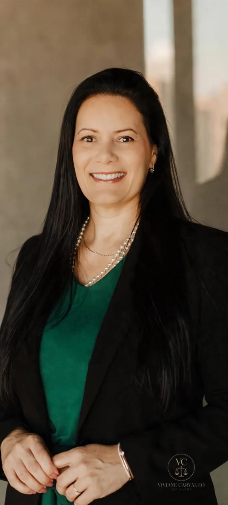

01
Quero me divorciar
Decidiu encerrar seu casamento, mas tem dúvidas sobre documentos, patrimônio ou como iniciar o processo?
Questões familiares exigem cuidado e orientação jurídica. Receba informações sobre divórcio, revisão de pensão alimentícia e os caminhos legais disponíveis para sua situação.
Atendimento jurídico individualizado e sigiloso.

Se você está enfrentando uma dessas situações, conhecer seus direitos pode ajudar a compreender os próximos passos.
Decidiu encerrar seu casamento, mas tem dúvidas sobre documentos, patrimônio ou como iniciar o processo?
Seu cônjuge não concorda com a separação? Entenda quais medidas legais podem ser adotadas.
As necessidades dos filhos aumentaram ou a situação financeira mudou? A revisão do valor pode ser analisada.
Uma mudança relevante na renda pode justificar a análise de um pedido de revisão da pensão alimentícia.
Quando um relacionamento chega ao fim, surgem dúvidas sobre partilha de bens, filhos, pensão alimentícia e os procedimentos necessários para formalizar a separação. A orientação jurídica permite compreender as alternativas previstas em lei e avaliar o caminho adequado para cada situação.
Mudanças nas necessidades de quem recebe ou na capacidade financeira de quem paga podem justificar uma revisão judicial.
A pensão atual deixou de atender adequadamente às necessidades? Mudanças nas despesas e nas condições econômicas podem ser consideradas na análise de um pedido de aumento.
Teve uma alteração significativa na renda ou na situação financeira? Dependendo das circunstâncias e das provas disponíveis, pode ser possível solicitar a revisão do valor.
A alteração da pensão depende da análise do caso concreto e dos critérios legais aplicáveis. O valor não deve ser modificado unilateralmente.
Entre em contato e informe, de maneira resumida, sua situação.
As circunstâncias e as informações do caso são avaliadas para identificar as possibilidades jurídicas.
Conheça os procedimentos e as medidas que podem ser adequados à sua situação.
Sim. O divórcio é um direito que não depende da concordância do outro cônjuge nem da comprovação de culpa. Quando não há acordo, o pedido é feito judicialmente (divórcio litigioso), e questões como partilha de bens, guarda e pensão podem ser decididas no mesmo processo ou em ações próprias.
No divórcio consensual, o casal está de acordo quanto ao fim do casamento e aos seus efeitos — partilha, guarda, convivência e pensão —, o que costuma tornar o procedimento mais simples. No litigioso, há discordância sobre o divórcio em si ou sobre algum desses pontos, e cabe ao juiz decidir as questões controvertidas.
Sim, desde que seja consensual, que ambos estejam assistidos por advogado e que não haja filhos menores ou incapazes, ou que as questões relativas a eles já tenham sido resolvidas judicialmente. Fora dessas hipóteses, o divórcio precisa ser judicial.
A partilha segue o regime de bens adotado no casamento. Na comunhão parcial, por exemplo, em regra dividem-se os bens adquiridos de forma onerosa durante a união; na comunhão universal, a divisão alcança praticamente todo o patrimônio; na separação de bens, cada um permanece com o que é seu. Cada situação deve ser analisada individualmente, inclusive quanto a dívidas e bens com documentação pendente.
Sim. A lei permite a revisão quando há mudança na situação financeira de quem paga ou nas necessidades de quem recebe. O pedido é analisado judicialmente, com base nas provas apresentadas, e o novo valor dependerá do equilíbrio entre necessidade e possibilidade.
É possível solicitar a revisão judicial quando há alteração relevante e comprovada na capacidade financeira — como perda de emprego, redução de renda ou nova obrigação familiar. Até que haja decisão, o valor fixado continua devido, por isso é importante buscar orientação antes de qualquer alteração.
Não. A alteração do valor depende de acordo homologado ou de decisão judicial. Reduzir ou deixar de pagar a pensão por conta própria pode gerar consequências legais, incluindo execução da dívida. O caminho adequado é o pedido de revisão, com a devida comprovação da mudança de circunstâncias.
Sim. Tanto no divórcio judicial quanto no realizado em cartório, a assistência de advogado é obrigatória. Além de exigência legal, a orientação profissional ajuda a organizar documentos, avaliar o regime de bens e proteger os interesses envolvidos, especialmente quando há filhos.
Atuação em Direito de Família, com atenção às particularidades de cada situação e compromisso com uma orientação jurídica clara, responsável e humanizada.
Cada situação familiar possui particularidades. A orientação jurídica adequada ajuda você a conhecer seus direitos e compreender as possibilidades disponíveis.
Atendimento jurídico individualizado e sigiloso.